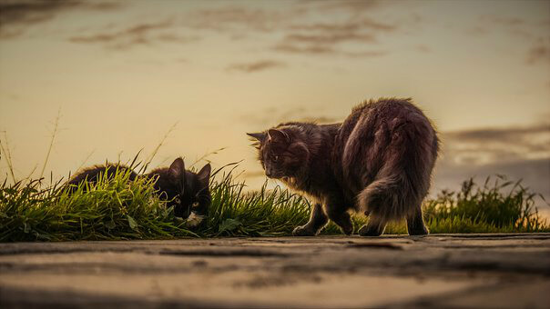
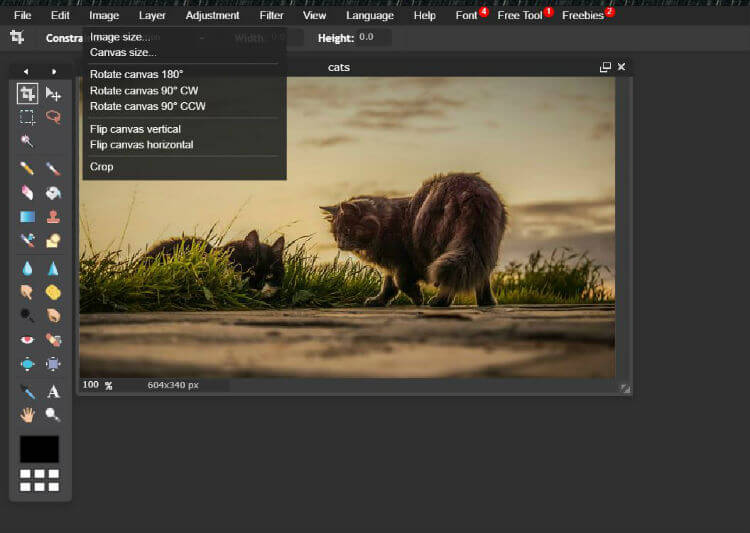
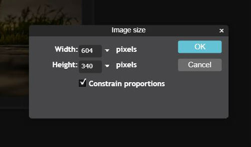
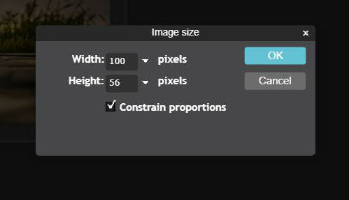
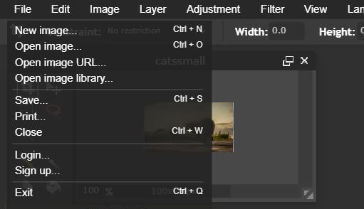
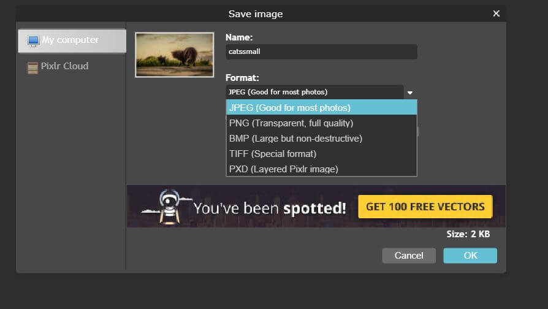

How to resize images with PIXLR

|
\/
First, I went to the 'image size' button from the 'image' button from the 'navigation bar' at the top.


Then I changed the pixel size from a height of 604 to 100.

: )
How to convert a PNG to JPG
Go onto the 'file' option at the task bar at the top.

Go onto the 'save' option on the 'file' menu. There is an optiont to save it to a 'JPG'
